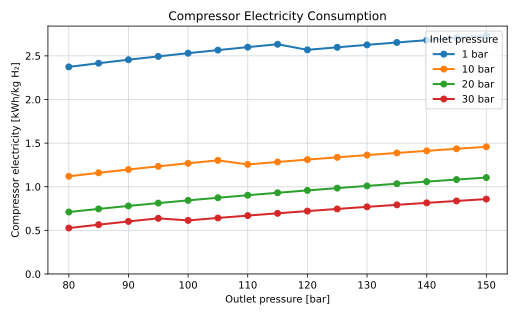
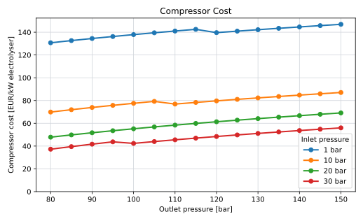

Hydrogen Compressor
Role and Scope
The hydrogen compressor raises the pressure of produced hydrogen from the PEM electrolyser outlet pressure to the pressure required by the hydrogen pipeline system.
The compressor is modelled explicitly because the pipeline injection pressure is a decision variable in this research. The model must therefore capture how compressor energy consumption and compressor cost change when the selected outlet pressure changes. This is necessary for the pressure-diameter optimisation of the hydrogen pipeline system.
Compression is included only in the hydrogen architectures. In the centralised architecture, compression takes place on the offshore electrolysis platform before injection into the export pipeline. In the decentralised architecture, compression takes place at turbine level before injection into the infield hydrogen pipeline.
The compressor model includes compressor electricity consumption, motor losses, CAPEX, OPEX and availability. It excludes electrolyser stack costs, electrolyser BOP, hydrogen drying, pipeline CAPEX, pipeline pressure drop and onshore recompression.
The compressor outlet pressure is the pipeline injection pressure, one of the optimisation variables in this research. Raising it trades cheaper, higher-capacity pipeline transport against a larger compressor energy and CAPEX penalty; see Pipeline Pressure and Capacity for how that trade-off plays out against pipeline diameter, pipeline count, and installation cost.
A fixed compressor energy value would hide that trade-off from the optimisation. This page therefore develops explicit compressor energy and cost models as a function of inlet pressure, outlet pressure, and hydrogen mass flow, so that the optimisation has something to weigh the pipeline side against. See Compression Energy and Cost Model below.
Key Assumptions
The base case assumes that PEM electrolysers deliver hydrogen at 30 bar. The compressor outlet pressure is not fixed. It is varied together with pipeline diameter and the number of parallel pipelines to minimise total LCOE.
| Parameter | Value |
|---|---|
| Electrolyser outlet pressure | 30 bar |
| Pipeline injection pressure | Decision variable |
| Typical pressure range | 80-150 bar |
| Maximum pressure ratio per stage | 3.3 |
| Hydrogen specific heat ratio, \(\gamma\) | 1.41 |
| Gas temperature, \(T\) | 298 K |
| Compressor efficiency, \(\eta_\mathrm{comp}\) | 0.80 |
| Motor efficiency, \(\eta_\mathrm{motor}\) | 0.95 |
| Compressor availability | 99% |
| Compressor OPEX | 3% of CAPEX per year |
| Compressor cost scaling exponent | 0.8335 |
The important driver is the pressure ratio, not the absolute pressure difference. Compressing hydrogen from 30 bar to 150 bar has a pressure ratio of 5. Compressing from 1 bar to 150 bar has a pressure ratio of 150. This is why the relatively high outlet pressure of PEM electrolysers is important for offshore hydrogen systems.
Compression Energy
The number of compression stages is determined from the maximum allowable pressure ratio per stage:
\[ N = \left\lceil \frac{\ln(p_\mathrm{out}/p_\mathrm{in})} {\ln(r_\mathrm{max})} \right\rceil \]
where \(r_\mathrm{max}=3.3\).
The actual pressure ratio per stage is:
\[ r_s = \left( \frac{p_\mathrm{out}}{p_\mathrm{in}} \right)^{1/N} \]
For the reference case of compression from 30 bar to 150 bar:
\[ \frac{p_\mathrm{out}}{p_\mathrm{in}} = \frac{150}{30} = 5 \]
This gives:
\[ N = \left\lceil \frac{\ln(5)}{\ln(3.3)} \right\rceil = 2 \]
and:
\[ r_s = 5^{1/2} = 2.24 \]
The compressor shaft work per kg of hydrogen is calculated as:
\[ w_\mathrm{shaft} = \frac{ N \gamma Z_\mathrm{avg} R T }{ (\gamma - 1) M_\mathrm{H_2} \eta_\mathrm{comp} } \left[ r_s^{(\gamma - 1)/\gamma} - 1 \right] \]
where \(Z_\mathrm{avg}\) is the average hydrogen compressibility factor between inlet and outlet pressure, evaluated from real-gas hydrogen properties via CoolProp at the arithmetic mean of \(p_\mathrm{in}\) and \(p_\mathrm{out}\), the same way the pipeline capacity model evaluates gas properties at an average pipeline pressure. Hydrogen deviates only mildly from ideal-gas behaviour over this pressure range (\(Z_\mathrm{avg}\) stays within a few percent of 1), but the deviation is calculated rather than assumed.
The electrical energy consumption of the compressor is:
\[ e_\mathrm{comp} = \frac{ w_\mathrm{shaft} }{ \eta_\mathrm{motor} \cdot 3.6 \cdot 10^6 } \]
where \(e_\mathrm{comp}\) is expressed in kWh/kg H₂.
The compressor power demand is then calculated from the hydrogen mass flow rate:
\[ P_\mathrm{comp} = e_\mathrm{comp} \cdot \dot{m}_\mathrm{H_2} \]
where \(P_\mathrm{comp}\) is in kW when \(e_\mathrm{comp}\) is in kWh/kg H₂ and \(\dot{m}_\mathrm{H_2}\) is in kg/h.
For annual or time-step calculations, total compressor electricity use is:
\[ E_\mathrm{comp} = e_\mathrm{comp} \cdot m_\mathrm{H_2} \]
This energy use is treated as a parasitic load in the hydrogen system.
Sensitivity to Outlet Pressure
Compressor energy consumption increases with outlet pressure because the relevant quantity is the pressure ratio:
\[ \frac{p_\mathrm{out}}{p_\mathrm{in}} \]
The same outlet pressure can therefore have very different compression penalties depending on electrolyser outlet pressure. Compression to 150 bar is a relatively modest duty when hydrogen leaves the PEM electrolyser at 30 bar, but a much larger duty if hydrogen is produced near atmospheric pressure.
Figure 1 shows \(e_\mathrm{comp}\) across the 80-150 bar outlet-pressure range used elsewhere in the model, for electrolyser outlet pressures of 1, 10, 20 and 30 bar.

The curves confirm why PEM outlet pressure matters: at a given pipeline injection pressure, compressing from 1 bar takes roughly three to four and a half times the electricity of compressing from 30 bar, because it is the pressure ratio that drives compression work, not the absolute pressure difference. Each curve also shows small kinks rather than a smooth rise. These come from the discrete number of compression stages, \(N\): as outlet pressure increases, \(N\) occasionally steps up to keep the per-stage pressure ratio within its 3.3 limit, and each step changes the slope of the curve.
Cost Model
The compressor cost model is based on the Transition Accelerator technical brief on hydrogen compression (Khan et al. 2021).
The model uses a power-law scaling relation:
\[ C_\mathrm{comp} = C_\mathrm{comp,ref} \left( \frac{P_\mathrm{comp}} {P_\mathrm{comp,ref}} \right)^{0.8335} \]
The exponent is below one, so larger compressors are cheaper per kW than smaller compressors. This matters because the centralised architecture uses a smaller number of large compressor trains, while the decentralised architecture uses many smaller turbine-level compressors.
As a reference: compression from 30 to 150 bar, for a 15 MW scale system, result in roughly \(56 \text{€}/kW\) compressor costs.
Cost Sensitivity to Outlet Pressure
For a fixed hydrogen production rate, compressor power scales directly with \(e_\mathrm{comp}(p_\mathrm{in}, p_\mathrm{out})\), so the cost-scaling relation above can be re-expressed as compressor cost per unit of electrolyser capacity:
\[ c_\mathrm{comp} = \frac{C_\mathrm{comp}} {P_\mathrm{ely}} \]
where \(P_\mathrm{ely}\) is the installed electrolyser capacity. Figure 2 shows this quantity over the same outlet-pressure range and inlet pressures as Figure 1, anchored to the 30-to-150-bar reference value above.

The cost curves are flatter than the energy curves in Figure 1, and the staging kinks are less visible, because compressor CAPEX scales with compressor power using an exponent below one: a given percentage change in energy consumption produces a smaller percentage change in cost. The same qualitative trade-off remains, though: higher outlet pressure increases compressor cost, and higher inlet pressure reduces it, for the same reason it does for energy.
Centralised Compression
In the centralised hydrogen architecture, all hydrogen is produced on the offshore platform. The compressor is therefore sized for the full farm-level hydrogen flow:
\[ P_\mathrm{comp,central} = e_\mathrm{comp} \cdot \dot{m}_{\mathrm{H_2},\mathrm{farm}} \]
The centralised compressor CAPEX is:
\[ C_\mathrm{comp,central} = C_\mathrm{comp,ref} \left( \frac{P_\mathrm{comp,central}} {P_\mathrm{comp,ref}} \right)^{0.8335} \]
This captures the economy of scale from centralising compression. In practice, the compressor would likely be split into multiple parallel trains for redundancy and maintenance, but the current model does not explicitly size those trains.
Decentralised Compression
In the decentralised hydrogen architecture, compression is represented at turbine level. For turbine \(j\):
\[ P_{\mathrm{comp},j} = e_{\mathrm{comp},j} \cdot \dot{m}_{\mathrm{H_2},j} \]
The total decentralised compressor cost is calculated by summing over all turbines:
\[ C_\mathrm{comp,decentral} = \sum_j C_\mathrm{comp,ref} \left( \frac{P_{\mathrm{comp},j}} {P_\mathrm{comp,ref}} \right)^{0.8335} \]
This captures the cost penalty of distributing compression across many smaller units. The decentralised architecture may still be attractive because it removes the central offshore electrolysis platform and replaces the infield AC grid with hydrogen pipelines.
Operating Cost and Availability
Compressor OPEX is calculated as:
\[ OPEX_\mathrm{comp} = 0.03 \cdot C_\mathrm{comp} \]
Compressor availability is assumed to be:
\[ A_\mathrm{comp} = 99\% \]
The available hydrogen after compression is therefore:
\[ m_{\mathrm{H_2},\mathrm{after}} = A_\mathrm{comp} \cdot m_{\mathrm{H_2},\mathrm{before}} \]
This is a simplified availability treatment. It does not explicitly model spare compressor trains, partial-load operation during failures or maintenance strategy.
Pressure Optimisation
Pipeline injection pressure is optimised together with pipeline diameter and the number of parallel pipelines, for the reasons set out in Pipeline Pressure and Capacity: pressure, diameter, material cost, and installation cost all move together, so none of them can be picked in isolation.
The optimisation problem is therefore not:
\[ \min e_\mathrm{comp} \]
and it is also not:
\[ \min C_\mathrm{pipeline} \]
Instead, the model minimises the combined system cost:
\[ \min_{p_\mathrm{out}, D, n_\mathrm{pipe}} LCOE \]
where \(p_\mathrm{out}\) is compressor outlet pressure and pipeline injection pressure, \(D\) is pipeline diameter and \(n_\mathrm{pipe}\) is the number of parallel pipelines.
The optimum can therefore occur at an intermediate pressure. A higher pressure may be justified if it avoids an extra pipeline. A lower pressure may be preferable if the pipeline is already oversized and additional compression provides little transport benefit.
Model Limitations
This compressor model is intended for early-stage techno-economic comparison. It is not a detailed compressor design.
The main limitations are:
| Limitation | Implication |
|---|---|
| Cost scales only with compressor power | Compressor type, train count and offshore packaging are simplified |
| One cost exponent is used | Technology-specific cost behaviour is not represented |
| Compression uses a simplified multistage equation | Intercooling, compressor maps and detailed thermal design are not modelled |
| Availability is a fixed percentage | Redundancy and partial failure are not represented |
| Offshore integration cost is excluded | Platform or turbine layout impacts may be underestimated |
Future work should replace the generic cost curve with a compressor-train model that includes compressor type, number of stages, intercooling, redundancy, turndown, offshore packaging and maintenance philosophy.